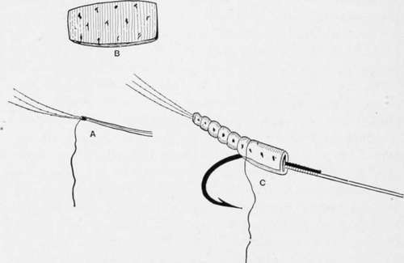
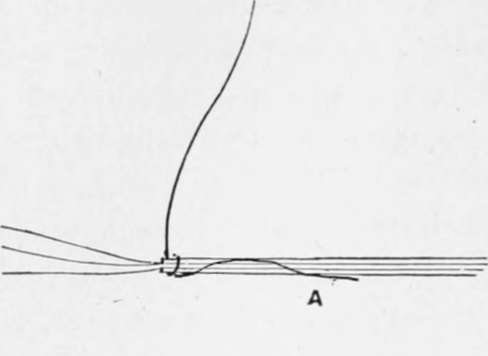
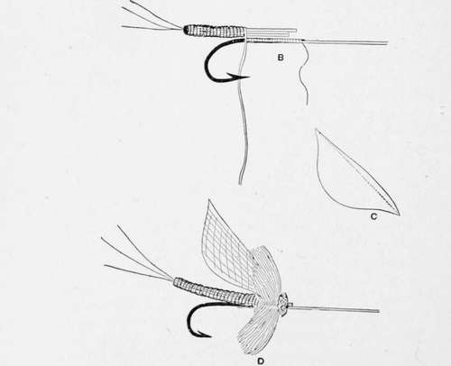
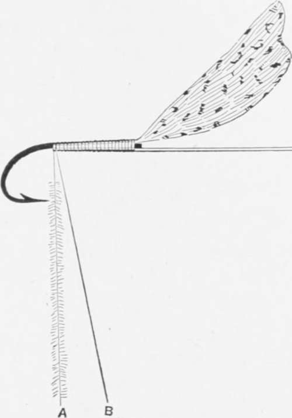

Fly-Fishing. Part 4
Description
This section is from the book "American Game Fishes", by W. A. Perry. Also available from Amazon: American Game Fishes: Their Habits, Habitat, and Peculiarities; How, When, and Where to Angle for Them.
Fly-Fishing. Part 4
This novel invention is (like all the other novelties described in these articles), my own, and I claim for it quite an extended range of usefulness. It often happens that the Bass, Trout, and even Salmon fisherman finds it necessary to change his flies till the right color and arrangement are hit upon. If he possess twelve only of these sets of adjustable flies-that is, twelve bodies, twelve wings, etc.,-he can make twelve dozen-or 144-different changes, and a gross of these flies, costing no more than a gross of first-class flies ever do, will provide him with-not 144, as would be the case with a gross of ordinary flies-but twenty thousand seven hundred and thirty-six changes-sufficient to last a life-time. It should be said that the adjustable system is applicable to all sizes of hooks larger than number 8 (Red-ditch numbering).
Fig. 29.
U.-Cork-bodied Floating Fly.-Body, cork; tail, fiber from peacock wing-feather; hackle, brown; shoulder, two turns of peacock herl; wing, mallard breast-feather.
The details of the making of this exceedingly killing fly are worth giving. Two bristles are taken, and the fibers for the tail are attached by strong tying silk, as in A, fig. 29. A slice of good clear cork is then cut (B) and soaked in warm water for a few moments to render it pliant. It is then wrapped round A, and the tying silk (of appropriate color, of course), is rolled round it in wide coils, and the cork is then placed on the shank of the hook (C). The coils are continued and finally secured. The peacock herl hides the junction between cork and hook; the hackle is added, and then the wings; and the fly is finished.
V.-Double-winged Red Spinner.-This feature of double-winging not only imitates many of the natural insects, but owing to the greater volume of feather (usually from some water-bird whose feathers are always most buoyant) it renders the fly a floater, when the wings are dried, by whirling in the air once or twice between each cast, as is practiced on the much-fished streams of England. This is pretty fishing-to see the fly sailing down, wrings erect, on the water, until the rising fish takes it with a musical smack of his snowy lips. What says Shakespeare?
"The pleasantest angling is to see the fish Cut with her golden oars the silver stream. And greedily devour the treacherous bait."
X.-The Royal Coachman.-Tail, wood-duck; tag, peacock herl; body, scarlet silk; shoulder, peacock herl; hackle, brown. A splendid all-round fly.
Z.-Red-legged Grasshopper.-Body, yellowish green chenille; legs, mid-rib of hackle, fibers clipped close; wings, sparrow small quill-feathers; head, peacock heil. As will be observed, this is an imitation of nature. I have tried all kinds of imitations, and this is the one with which to best fool Trout, in a clear stream, in the grasshopper season. Of course the natural insect is more killing, but this is very effectual, even in comparison.
Fie. 30.
The chief of the flies to be found near water can be very closely imitated in gut, for the bodies (or quill) and the scale-membrane wings are always acceptable, when the insect to be copied is possessed of a one-hued wing. Of course, if it is of various shades and tints the scale fails and we are obliged to resort to feather.
Fig. 31.
The process of the making of the ordinary gut-bodied, detached membrane winged fly is shown in the diagram, fig. 30. The flattened waste-ends of hank-gut are soaked, and drawn between the thumb-nail and finger to straighten them. One is then taken and set on, round three or more hog's bristles (see A), and continued till the stage B is arrived at. The gut is then further wound on, and secured finally by the tying silk. Next, the hackle is set on, then the wing. This latter is formed thus: Take a piece of scale-membrane, and double it-then cut it till the free edges resemble C. Next cut a piece out of the fold, as shown by the dotted line in C, leaving a minute piece joining the two wings at top and bottom. Next, place it and tie it in situ (see D); finally tie on a piece of ostrich or peaccok heil for head, as shown.
Sometimes a fluffy and woolly body is preferred. In such cases fig. 31 shows the amateur what to do. Take two pieces of well-waxed tying silk and secure them, as shown, to the hook. Pick out the fur or wool, etc., and lay it carefully on the left-hand thread; then bring the other on top of it, and twist both threads to the left till the two threads have gathered up the dubbing satisfactorily. It can then be wound on as one thread. This is a far better plan than using one thread only and trusting to the stickiness of the wax.
All the quill-bodied gnats are made from the quill of the fibers of the peacock eye-feather. The list of the fiber is stripped off, and there remains a parti-colored strip which, when wound on the hook as a body, is wonderfully like the natural insect. These imitations can be varied indefinitely, and the taste of the tier is brought greatly into play in the manufacture of these tiny flies.
In the above directions and explanations sufficient has been said to put the learner on the right track, and it is his own lack of enthusiasm to blame if he does not profit by them. The following are the dressings of the chief and most valued patterns of Trout, Bass and lake flies. [Salmon flies will be dealt with in another section.]
Continue to:
- prev: Fly-Fishing. Part 3
- Table of Contents
- next: Names And Dressings Of Standard Trout Flies For The Amateur Fly Dresser